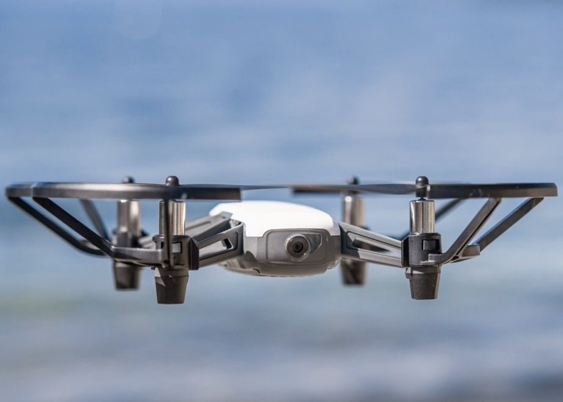

-
September 2020
one week
Serio inc.
Okayama, Japan
Raspberry Piと距離センサーを使用して扉を通過した人の人数をカウントし、DBに格納してCSV形式で出力するというプロジェクトに携わった。リーダーを務めさせて頂き最後は綺麗に動くものができた。
-
August 2022
two weeks
川崎重工業株式会社 ロボットディビジョン
Kawasaki Heavy Industry inc.
Kobe, Hyogo, Japan
6軸シリアルリンク汎用産業用ロボットの単純な完成系モデルを作成したのち、モータ内のフライホイールの有無が動作性に与える影響を理論・実機検証をした。活動内容に対し高い評価を頂いた。
-
May 2023
tree months
OSARO inc.
San Francisco, The United States
シリコンバレーのロボット企業で働いてみたいという理由でインターンをした。 従来、手動で行なっていたDepal向けのカメラキャリブレーションをPyhonとOSAROのAPI、Fanucのロボットを用いて自動化した。 他にも投資家に向けたロボットのデモを走らせることやAIモデルを作成するタスクなどを行なった。 活動内容に対して高い評価を頂いた。
portfolio

